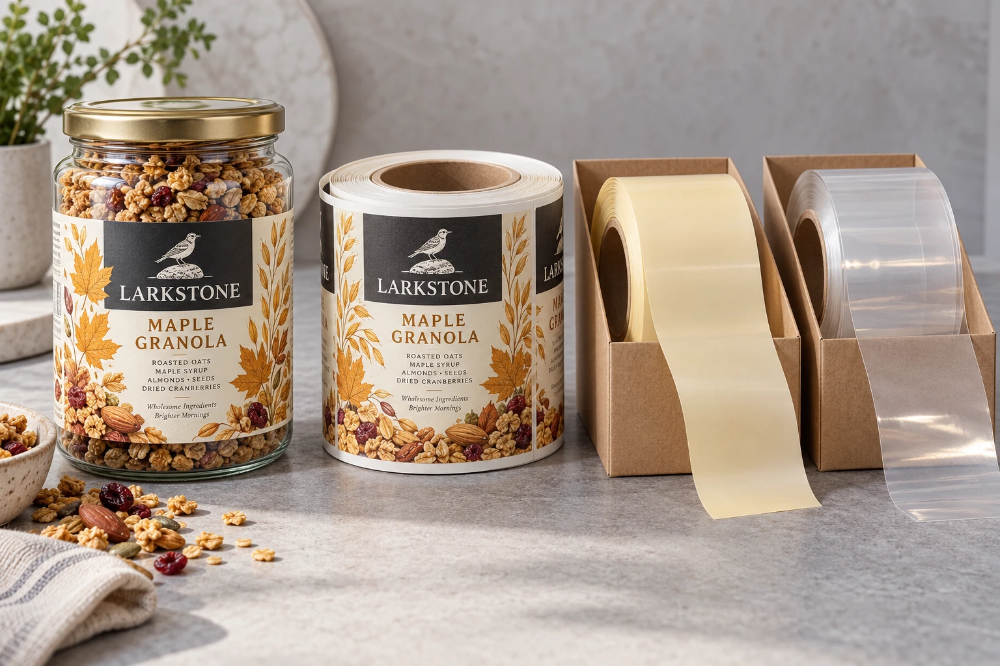

The technical team selects a liner that runs on the line. A sustainability spreadsheet then counts all discarded backing as recycled, even though no receiving partner has confirmed the material or collection format.
Confirm the receiving route and separation arrangement before counting liner recovery. Machine performance and collection acceptance are separate decisions; one cannot be inferred from the words paper or PET.

AI-generated packaging planning example. Larkstone is a fictional brand; not a customer project, production test or usable retail artwork.
Identify what leaves the labeler
Record the actual spent-liner material, source line and expected volume basis. Distinguish backing from printed label remnants, matrix, cores and mixed setup waste. A supplier can help identify the liner; the receiving partner determines its accepted stream and preparation.
| Collection question | Confirmation to retain |
|---|---|
| Material | Actual paper/film type, color and construction identity |
| Accepted stream | Which material and contamination conditions the partner accepts |
| Site separation | Dedicated collection point and excluded waste |
| Storage/preparation | Required protection, container or bale arrangement |
| Logistics | Site, volume basis, collection schedule and commercial terms |
| Handoff evidence | Material quantity and documented receiving/destination record |
CELAB Europe's current FAQ advises confirming acceptance with the selected partner and keeping used liner clean, dry and separate. It also distinguishes liner from matrix waste. Its European network is a regional resource, not proof of an available route at every buyer location.
Start with one actual accepted stream
If the site cannot yet keep materials separate, identify a practical collection point with the waste partner before expanding the program. Do not send mixed material under a clean-liner description. Confirm whether tapes, labels, cores or other remnants are allowed rather than assuming a recycler will sort them.
Keep collection terms project-specific. An attractive material choice does not establish minimum collection quantity, free pickup or an economic result. Compare the actual proposed arrangement and site work with the business's objectives.
Report what the evidence supports
Material generated, material segregated, material dispatched and material accepted are different quantities. Keep their units and time windows clear. A filled collection box is evidence of segregation, not by itself evidence of completed recycling.
If the site changes liner type or mixes a new stream into the collection, ask the partner to confirm acceptance again where relevant. Keep the machine trial decision intact while reviewing the downstream route; there is no need to call a liner unusable on the labeler merely because the waste arrangement is unresolved.
For the release-report method, use the separate technical record. For roll dimensions, use the equipment interface. For stock eligibility, use storage history. Recovery is a separate material handoff after the labels have been applied.
Short answer
Choose glassine for proven general-purpose converting and PET when thinness, strength, dimensional stability or demanding high-speed dispensing justifies it. Then verify the exact face, adhesive, die cut and applicator together. The liner is not an isolated upgrade.
Buyers rarely ask to see the part that goes into the waste bin. Production teams care because the liner is the web that pulls every label through the applicator. If it stretches, breaks, curls or carries a poor die strike, the front label does not matter.
Where each liner earns its place
| Decision | Glassine liner | PET liner |
|---|---|---|
| General roll converting | Established and widely available | Available but often specified for higher demands |
| Caliper and roll yield | Typically thicker | High strength at low caliper can increase labels per OD |
| Dimensional stability | Can respond to humidity | Stable in demanding dispensing conditions |
| Clear-label appearance | May suit many constructions | Often preferred for precise clear-film converting |
| End-of-life route | Requires a liner-paper recovery stream | Requires a dedicated PET liner route |
A composite beverage-line decision
This is a composite planning example. A beverage brand moves from paper labels at moderate speed to thin clear labels on a faster line. Purchasing wants the previous glassine liner because it is familiar and less expensive on the quote. Engineering asks for PET because the web path is long and dispensing tolerance is tighter.
Neither position should win by slogan. In this hypothetical case, the parties should compare the actual line evidence and costs of each complete construction. Neither material wins merely from a brochure description.
Thin liner can change the roll build
A thinner liner can place more labels on a roll at the same maximum outside diameter. That may reduce changeovers and core consumption. It can also create a heavier, longer roll and alter tension behavior. The core, OD and unwind specification must be reviewed again instead of copied from the paper-liner job.
Die cutting decides whether the liner survives
The die should cut the face stock and adhesive cleanly without damaging the liner. Excessive die strike creates weak points that may break at speed. Too little cut leaves labels connected by material fibers or adhesive. PET and glassine respond differently, so changing liner can require tooling and press adjustments even when the label shape is unchanged.
Static control also matters with film webs. A technically strong PET liner can still create handling trouble if the converting and application line is not prepared for static.
Do not turn material choice into a sustainability shortcut
Paper does not automatically mean recyclable in the buyer's local collection system, and PET does not automatically mean waste. Release liners carry silicone and adhesive residue and generally need specialized recovery. Ask the waste partner what format, cleanliness, volume and baling conditions it accepts before putting a recycling message in a sustainability report.
Trial checklist
- Identify line speed, web path, sensor and peel-plate geometry.
- Confirm face, adhesive and liner as one material code.
- Check die strike, matrix stripping and splice performance.
- Run at startup, normal and maximum practical speed.
- Record breaks, double feeds, placement drift and changeover time.
- Recalculate labels per roll and finished roll weight.
- Validate a real recovery route separately from machine performance.
Avery Dennison's official release liner overview describes glassine and PET options, while its product guides note PET's use in demanding high-speed and clear-label applications. For the face-stock decision above the liner, see Clear BOPP vs White BOPP Labels.
Send the relevant project details
Discuss a label construction with an identified liner with application equipment, label size, quantity and proposed liner requirements. If recovery is an objective, state your collector's confirmed acceptance rather than a generic eco request. The form opens an email draft; use listed email or WhatsApp for files. This website does not promise a collection or recycling service.